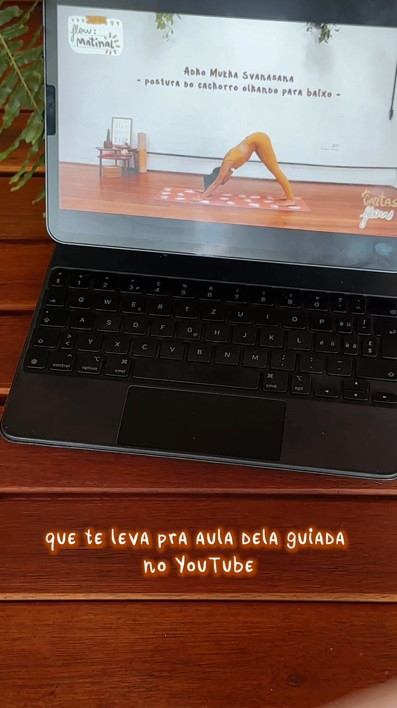

Fizemos uma varredura de tudo o que rodou de Cartasflow e Cartasanas em 2026 — o que estava no ar, quanto foi investido em cada mês, o que saiu do ar e por quê. Este documento mostra o que encontramos e o que já colocamos de pé para retomar.
O resumo
As cartas foram o produto que melhor respondeu a anúncio no começo do ano — e saíram do ar sem nunca terem sido avaliadas
R$ 64,3 milem vendas geradas por anúncios de cartas em 2026
R$ 16,1 milinvestidos nesses anúncios no mesmo período
212vendas atribuídas a essas campanhas no ano
5,5xde retorno em janeiro — o melhor da conta naquele mês
Dados do Meta Ads, de 1º de janeiro a 3 de setembro de 2026, considerando todos os anúncios de Cartasflow, Cartasanas e Cartasprana.
Mês a mês
Quando investimos e o que voltou
Mês
Investido
Vendas
Faturamento
Retorno
Situação
Janeiro
2.503
48
13.797
5,5x
no ar, forte
Fevereiro
3.229
48
11.962
3,7x
no ar, forte
Março
2.222
38
11.413
5,1x
no ar
Abril
3.137
38
14.112
4,5x
no ar
Maio
1.686
22
8.044
4,8x
última fase boa
Junho
319
0
0
—
saiu do ar
Julho
1.620
16
4.633
2,9x
peça isolada
Agosto
459
2
411
0,9x
peça antiga, sozinha
Setembro
0
0
0
—
nada no ar
Total
16.142
212
64.371
4,0x
—
Valores em reais. “Retorno” = quantos reais em vendas cada real investido trouxe, na medição do Meta.
O que rodava × o que não rodava
A receita que funcionava
✔ O que estava sendo feito (jan–mai)
Anúncios só de cartas, com peça própria — não misturados na vitrine geral da loja.
Público quente: quem já seguia, via os conteúdos ou tinha visitado o perfil.
Formato Stories e Reels, que era onde as cartas performavam melhor.
Várias versões da mesma peça no ar ao mesmo tempo: vídeo narrado, depoimento, GIF, carrossel.
Campanha mirando número de vendas — o que dá espaço a um produto de ticket médio.
Motivos de compra no anúncio: cupom e brinde (o manual de sequências).
✕ O que deixou de ser feito (jun em diante)
A conta foi reorganizada para recuperar o ticket médio, que havia caído de R$ 369 para R$ 272 — decisão certa, e funcionou: agosto fechou em R$ 388.
Nesse movimento, a verba foi concentrada nos tapetes premium, e as campanhas que carregavam as cartas foram encerradas.
As cartas passaram a aparecer só dentro da vitrine automática, onde disputam espaço com produtos de R$ 558 — e perdem.
Nenhuma peça nova de cartas foi produzida desde fevereiro. As de julho e agosto eram as mesmas de janeiro.
Em agosto sobrou um único anúncio de carta, antigo, dentro de uma campanha desenhada para vender tapete — e o resultado dele não representa o produto.
Já está pronto
O que subimos esta semana
Montamos uma campanha exclusiva das cartas, separada das campanhas de tapete — para que o produto não dispute verba com item de ticket alto e possa ser medido pelo que ele é.
Público quente · R$ 35/dia
Quem já seguiu, engajou ou visitou o perfil nos últimos 180 dias — cerca de 60 mil pessoas.
Stories, Reels e Feed, no Instagram e no Facebook.
É a receita que rendeu o melhor resultado do ano em janeiro e fevereiro.
Públicos semelhantes · R$ 25/dia
Pessoas parecidas com quem já comprou e com as clientes de maior valor.
Entrega automática, para o algoritmo achar compradoras novas.
É o braço de aquisição — traz gente nova para a marca.
Investimento total: R$ 60 por dia (cerca de R$ 1.800 no mês), com a meta de manter o custo por venda em torno de R$ 55 — foi o custo que as cartas tiveram em janeiro.
Os anúncios
As quatro peças que voltam ao ar
Escolhemos as peças com melhor histórico de venda — duas de Cartasflow e duas de Cartasanas. Elas voltam pelos posts originais, ou seja, com todas as curtidas e comentários já acumulados, em vez de começarem do zero. Clique em cada uma para ver o anúncio completo — e, se preferir, o post original na página.

CartasflowA carta que vira aula guiadaVídeo mostrando o QR da carta abrindo a prática no YouTube. Histórico: 37 vendas e R$ 10.570 com R$ 1.520 investidos.
CartasflowNem todos os dias são iguaisVídeo dos flows ilustrados, carta a carta. Histórico: 17 vendas e R$ 6.065 com R$ 848 investidos — o melhor retorno do ano.
CartasanasCompre e ganhe o Manual de SequênciasA oferta com brinde — 120 cartas mais o e-book de 59 páginas. Histórico: 14 vendas e R$ 5.457 com R$ 1.064 investidos.
CartasanasO que está atrás de cada cartaDemonstração dos efeitos físicos e emocionais de cada postura. Histórico: 10 vendas e R$ 3.239 com R$ 541 investidos.
Uma quinta peça ficou de fora: ela levava para uma página de produto que hoje não existe mais no site. Se quiserem essa versão de volta, refazemos com o link atualizado.
Próximos passos
Como vamos conduzir
1
Primeira semana no ar. Acompanhamento diário do custo por venda, com o alvo de R$ 55. Se ficar acima disso e não corrigir, ajustamos público antes de mexer em verba.
2
Peças novas até o fim de setembro. As atuais são de janeiro e já rodaram bastante. Vamos gravar três novas — uma delas mostrando a carta em uso na prática, que é o formato que mais converteu.
3
Outubro é o mês de reforçar. Na série histórica da conta, outubro é mês de presente: o ticket sobe. Carta é um presente de valor acessível, e é onde queremos as campanhas maduras.
4
Pinterest de volta na sequência. A campanha de baralhos por lá teve ótimo retorno em junho e está parada por saldo. Vale retomar assim que houver aporte definido para o canal.